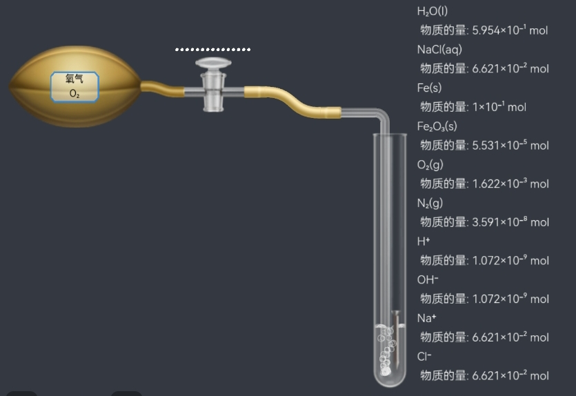
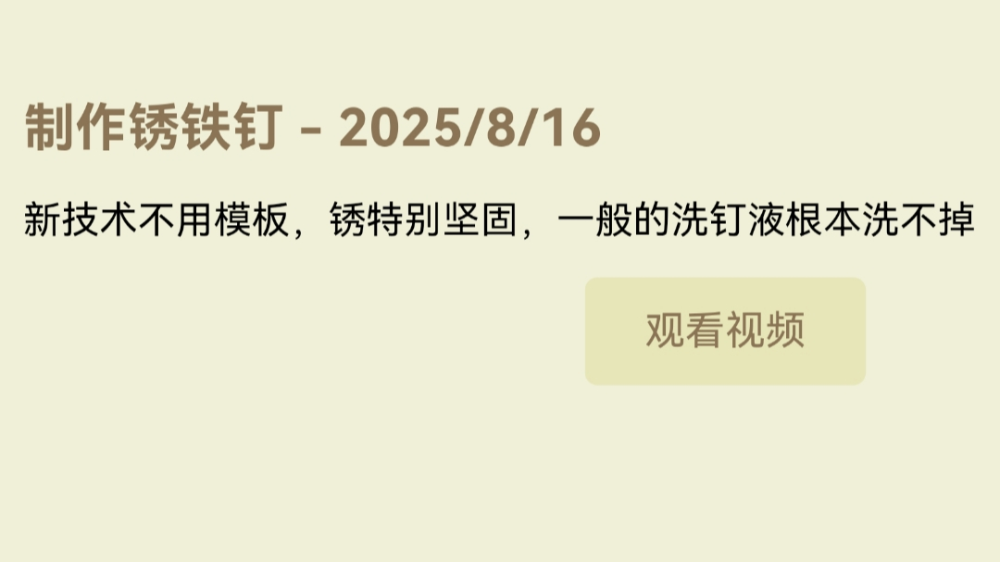
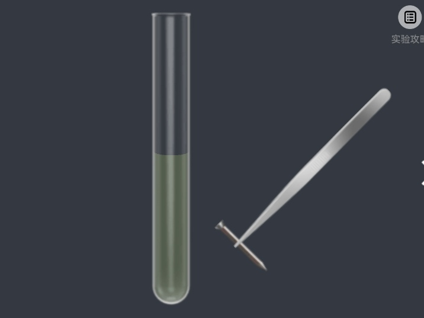
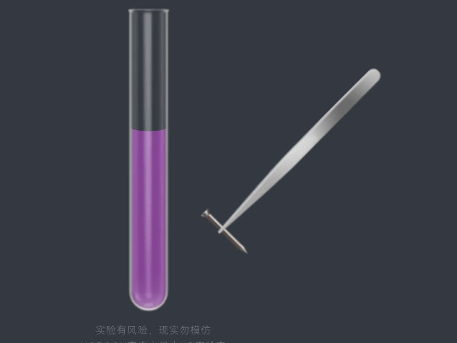
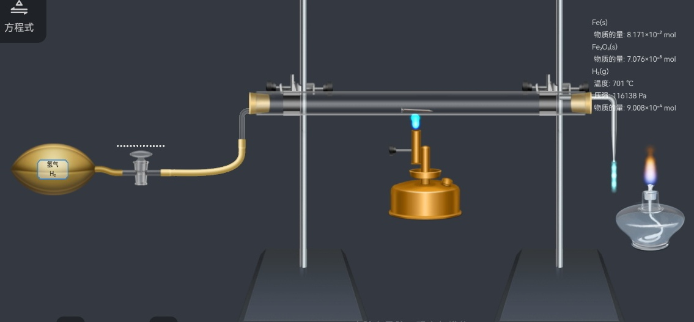

研究这东西的是个人物。首先了解一下Vial锈钉液：

就是用饱和盐水+氧气，利用NB逆天特性，使铁钉表面无中生有般出现氧化铁。
Vial是这么说的：

为此，我准备了齐喜的经典产品：2.5代洗钉液，测试效果！
结果打脸了，根本洗不掉

我又掏出3代洗钉液：

铁钉都要磨没了，氧化铁一点没少。
这就说明这氧化铁不是以一般的形式存在，普通洗钉液无法发生反应。
找CWMM借台干式洗钉机：

铁锈不减反增！
也就是说，Vial锈钉液锈出来的钉子很难被清洗。